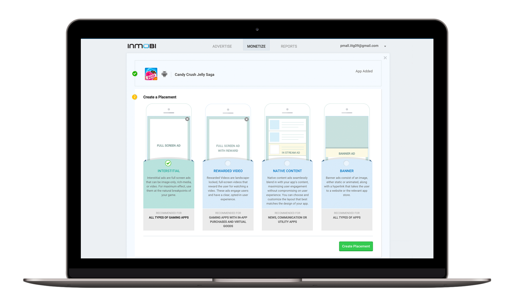
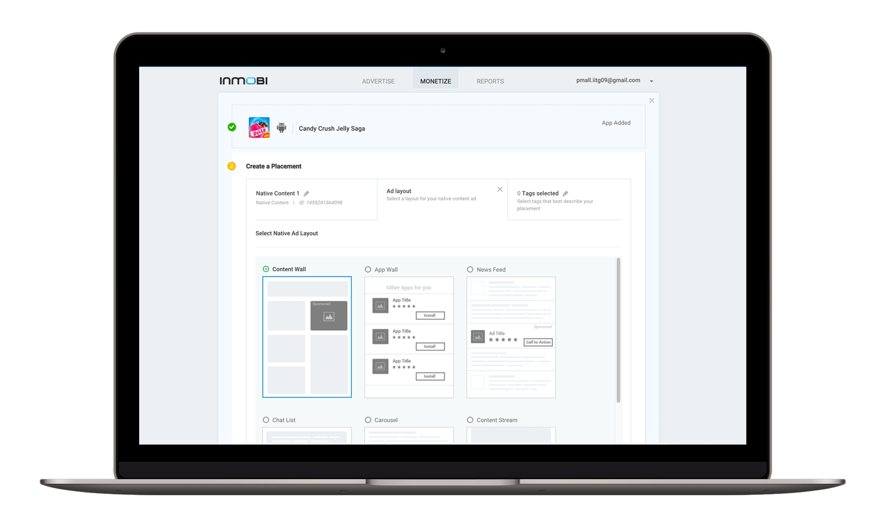
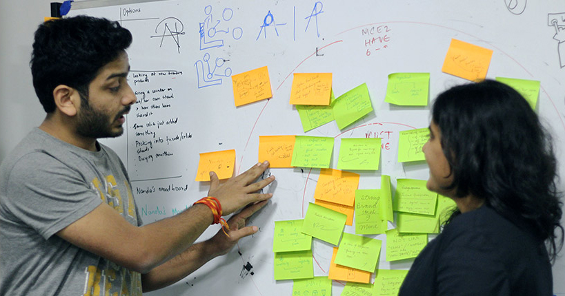
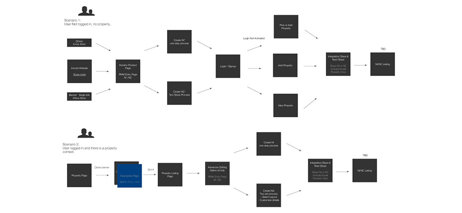
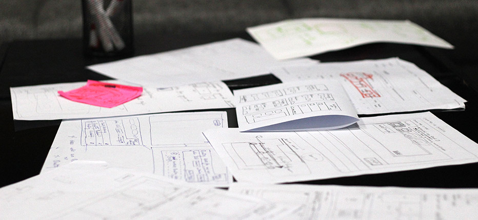
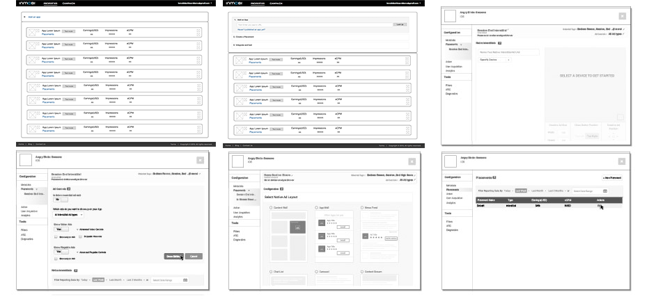

Inmobi - Monetization flow
Reimagining Inmobi's Monetization flow for developers for newly introduced Ad formats.
Project Goal
Inmobi is a mobile advertising company which helps app developers monetize on mobile apps by integrating InMobi's SDK
using company’s customer portal.
The goal of the project was to reimagine the monetization flow to cater to emerging ad formats.
InMobi’s customer portal being primarily used by highly advanced users/experts faced a problem
of limited audience. Challenge of this project was to make the monetization flow self serve -
accessible and easy to use for larger audience and naive users.
Solution
The new flow prevents duplication of apps for new ad formats by creating multiple ad placements within one app. The flow educates the users about the formats and helps set up the app for monetization easily in-context.


My Role
I primarily worked with two Product Managers, a Product Analyst and a fellow designer on product strategy and design. Working collaboratively with UI developers, I frequently conveyed designs and their rationales to them. As a part of our team ritual, I also ran design review sessions with the larger UX team for feedback.
Design Process
We started off with understanding the existing system and its fallacies. The managed-served flows of new ad formats were also studied.
Stakeholders met to address dependencies and came up with the product requirements.

Setting Design Goals
• Simplification of the flow and educating the users of new ad formats to increase self-serve monetization.
• Reduce the monetization setup time.
Design Decisions
• We introduced Placements which aligned to the user's mental model of different spaces where their Ads are shown
within one App and reorganized information in a structured and intuitive fashion.
• We decided not to overwhelm the user with all the features and functionalities of the system and used Progressive Disclosure to achieve that.
• Adding a new app and monetization setup were disjoint flows and we combined them in a single screen.

Paper Prototyping
Once our strategy and basic architecture were identified, we made design iterations.
Initial iterations were made on paper facilitating quicker changes and ideations.
Paper prototypes helped us conceptualize the design in our heads and finalize our approach.

Mid-fi Wireframes
After the flow and navigation were almost confirmed, we moved to address details in the design through mid-fi wireframes. These wireframes also helped in communication of the design to UI developers and other stakeholders. These were made using Omnigraffle.
What we achieved
After a few months of our release, we saw an increase in self-serve monetization of exisiting ad formats by ~40%.
Also, the newly introduced native ads format saw ~80% setup through the self-serve portal which comprised ~10% of the total network revenue.
We also saw the time to setup monetization reducing significantly.